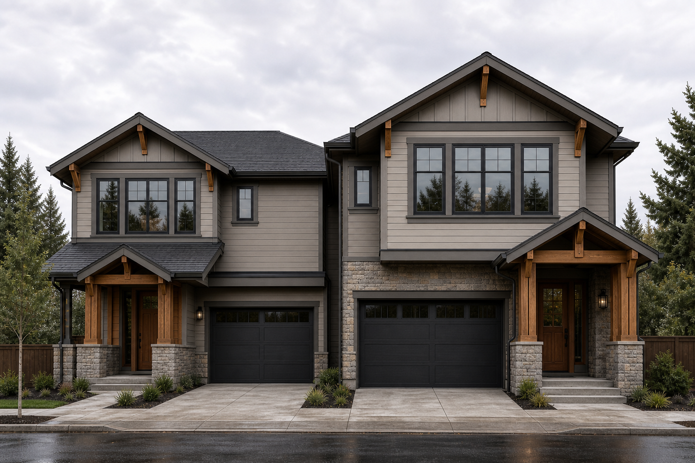
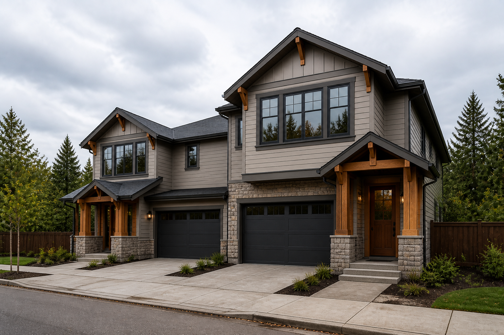

Image 4 — DRIFT / rejected as geometry proof
Attractive duplex renders, but not an honest rendering of frozen J1-B. The generator collapsed the deep stagger into a conventional contiguous street façade.
REJECTED AS GEOMETRY PROOF. Two wide 2-car garage openings were correctly preserved, but the Pennsylvania-near A mass and deeper B mass were pulled together into side-by-side townhomes. Secondary symptoms: cohesive conventional roof system; near-symmetric street entries; normalized front-loaded garage/entry relationships.
Images 1–3 remain frozen and approved. J1-B concept is not convicted. Floor-plan sanity: WAIT.
Style keep: gray/taupe siding, dark openings, stone bases, timber porches, restrained Craftsman / PNW character — archived for later. Next: Image 4.1 = same-camera photoreal of Image 3 axon (no elevation yet).
Open Image 4.1 · same-camera axon →
Archived as style reference only
reference/failed-visualization-drift/

